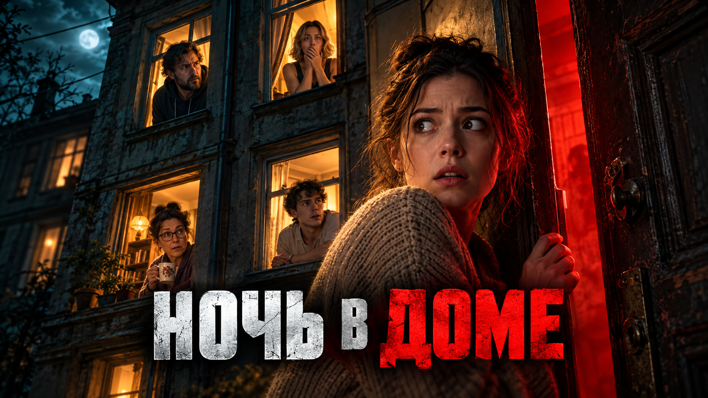
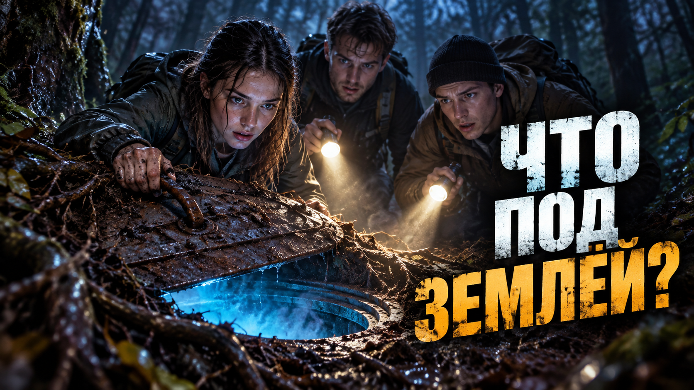
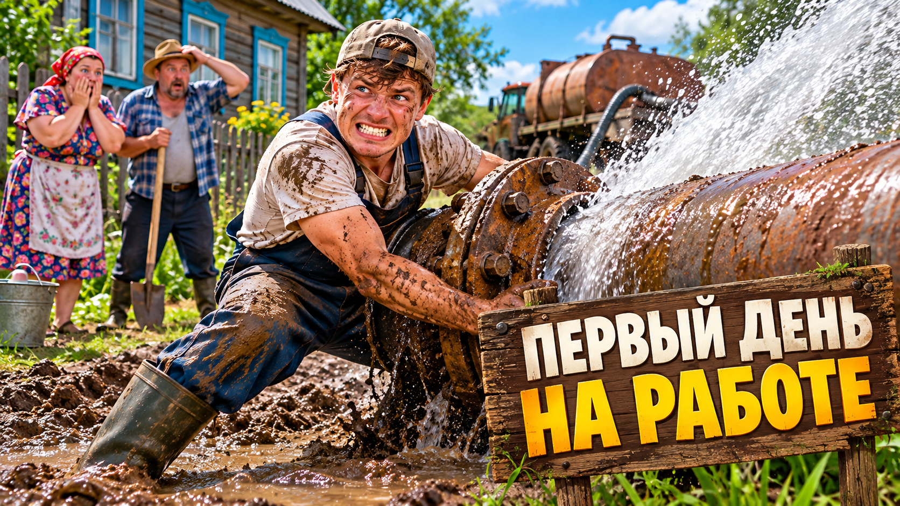
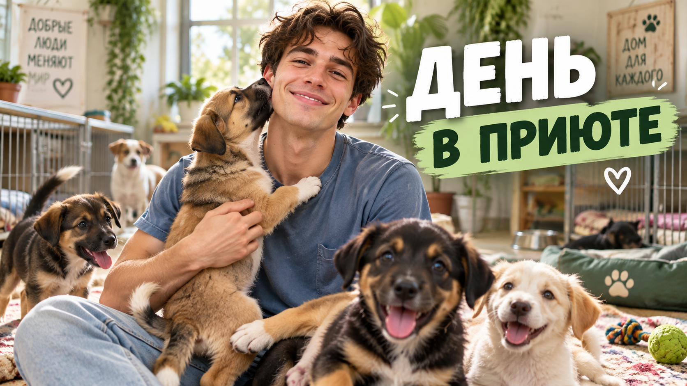
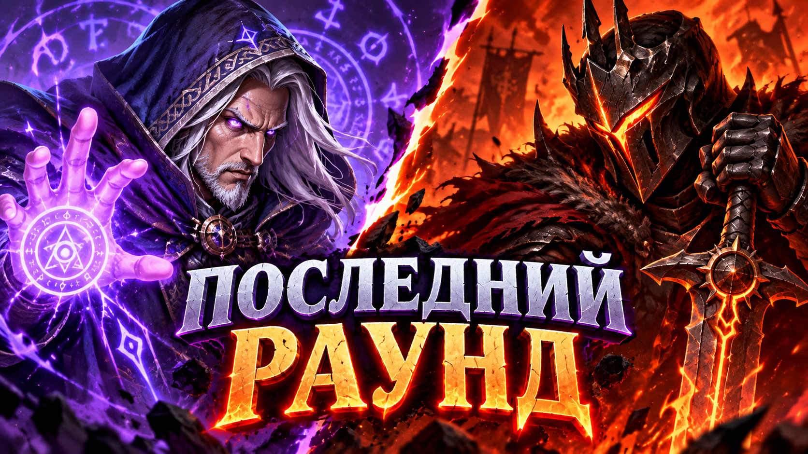
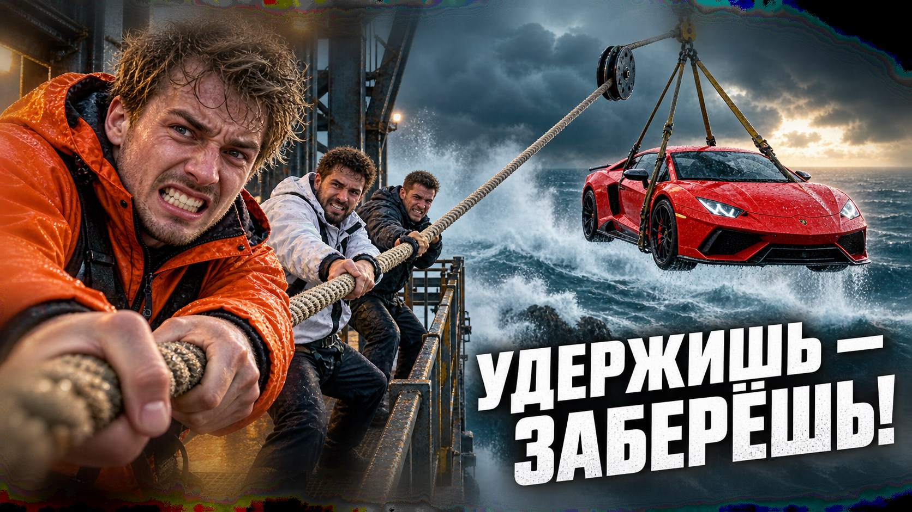
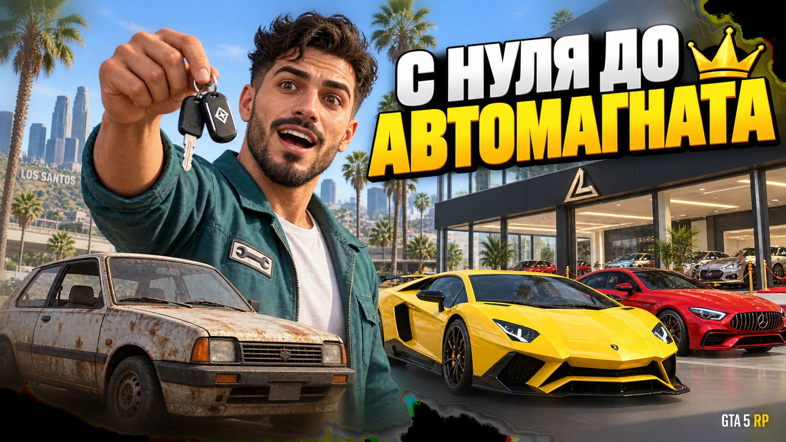
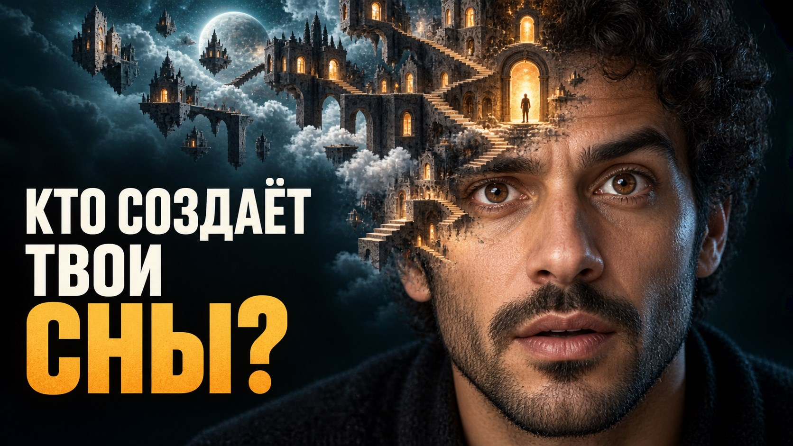

Превью, которые останавливают взгляд.
Обложка работает ещё до того, как зритель прочитает название ролика. Ищу для неё одну ясную идею: кто в центре, что происходит и почему хочется открыть видео. Затем собираю кадр, который читается и на телефоне.
Обсудить превьюПримеры превью
Девять разных сюжетов и способов привлечь внимание. Для вашего ролика подберём свою идею, а не повторим готовую композицию.

Идея и сборка
Задача — за секунду передать тревогу и вопрос: что происходит в доме? Контраст тёплых окон и красной двери направляет внимание на главную героиню, а короткий заголовок дополняет историю.

Идея и сборка
Задача — вызвать любопытство: герои нашли что-то, чего зритель ещё не видит. Кадр построен вокруг люка и света снизу, а вопрос в заголовке оставляет развязку за пределами обложки.
Идея и сборка
Задача — показать тему проверки настроек без перегруженного скриншота меню. Эмоция ведущего, показатель FPS и короткий заголовок помогают быстро понять тему ролика.

Идея и сборка
Задача — передать комедийный провал без длинного объяснения. В центре — человек и прорвавшаяся труба, а реакция на заднем плане помогает понять ситуацию.

Идея и сборка
Здесь важнее тёплая эмоция, чем громкий заголовок. Человек в центре и детали приюта раскрывают сюжет, а спокойная композиция не отвлекает от главного.

Идея и сборка
Концепт для напряжённого игрового момента. Столкновение двух персонажей, контрастные цвета и крупный заголовок сразу показывают конфликт.

Идея и сборка
Задача — сразу показать испытание и приз: участники держат канат, а над водой висит машина. Крупная эмоция, штормовое море и короткая надпись передают напряжение выдуманного челленджа.

Идея и сборка
Задача — показать путь новичка к своему автосалону в GTA 5 RP. Старая машина и дорогие автомобили создают понятный контраст, а ключи связывают персонажа с результатом. Это концепт выдуманного ролика, не скриншот игры.

Идея и сборка
Задача — заинтересовать темой снов одной необычной картинкой. Город с лестницами, вырастающий из головы, показывает мир воображения. Крупный портрет и короткий вопрос оставляют понятный центр внимания.
За каждым кадром — опыт в разных задачах.
Я начинал с дизайна и видеомонтажа. Поэтому смотрю на обложку как на часть видео: важно, что зритель заметит первым и совпадёт ли ожидание от превью с самим роликом.
Сейчас использую инструменты искусственного интеллекта там, где они помогают быстрее найти варианты и точнее проработать детали. Идею, композицию и финальное качество оцениваю сам — под конкретную задачу, а не по готовому шаблону.
Расскажите о своём проекте